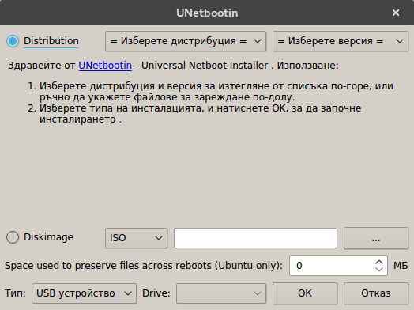
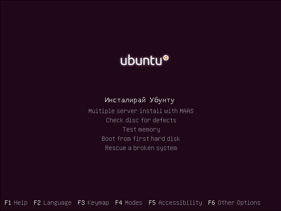
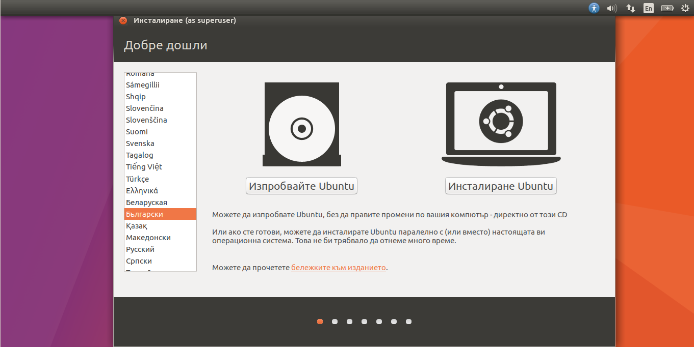
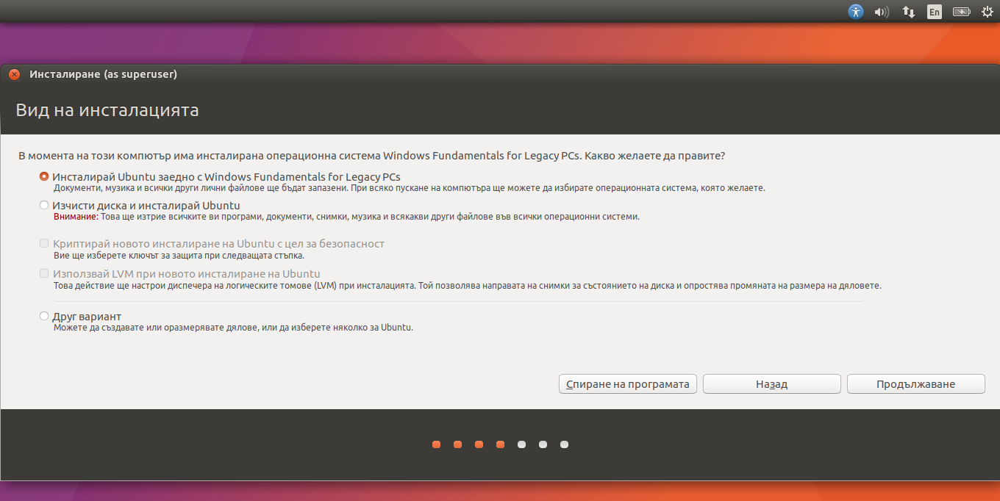

За инсталацията ще Ви е нужно да инсталирате Линукс на диск или флашка (която е празна) чрез UnetBootin (ЮнетБуутин; налична за всички операционни системи). Поставете диска в ДВД устройството или включете флашката във Вашия компютър. Препоръчваме да изберете „Lubuntu“ (за стари и нови компютри) или „Linux Mint“. Те са базирани на известния „Убунту“, разработен от Каноникъл. Може да намерите различни дистрибуции на www.distrowatch.com.След като сте си избрали дистрибуцията по Ваш вкус и сте приготвили инсталационният носител е време за инсталация.
Включете Вашия компютър докато задържате (зависи от производителя) F8, F12, F11 или Enter, за да изберете от кое устройство да зареди инсталацията. Когато се покаже списък с устройства, изберете Вашето ДВД устройство или флашка, като навигирате менюто със навигационните стрелки на клавиатурата и избирате с Enter. След това според избраната дистрибуция инсталатора може да изглежда различно, но би трябвало да има опции за промяна на езика, проба и инсталиране на екрана.
Ако желаете може първо да пробвате дистрибуцията директно от инсталационния носител или да инсталирате операционната система.
Ако сте избрали дистрибуция базирана на Убунту изберете да се инсталира софтуер от трети лица.
 След това ако искате на този компютър да работи само Линукс изберете втората опция, която ще форматира целия твърд диск и единственото което ще има на него ще бъде Линукс. За някои по-стари програми или такива, които нямат поддръжка за Линукс, може да изберете опцията за инсталиране на Убунту заедно с Уиндоус, която е на първа позиция.После ще се появи на екрана схема за разпределяне на твърдия диск. Тук може да определите с колко дисково пространство разполага Убунту. За използваема система препоръчваме над 32ГБ за Линукс.След като разпределите пространството, на екрана ще се появи карта на света, а под нея – поле за въвеждане. Там (ако не е въведено вече) може да въведете „Sofia“, за да използва Вашия компютър българското време. Настройването на клавиатурата следва. Има няколко начина за въвеждане на български: по БДС (Български Държавен Стандарт) или фонетична традиционна. Клавишите по БДС са маркирани на всички български клавиатури (в долния ъгъл на клавиша Последния екран. Тук се въвеждат данни за потребителя. В първото поле въведете името си, а във второто името на компютъра. То ще се използва, когато комуникира с други компютри в локалната мрежа. В четвърто поле въведете парола. Препоръчваме между 8-12 символа и да съдържа ГЛАВНИ, малки букви, цифри и специални знаци (!@№$%€§*). Също препоръчваме и да не избирате опцията за автоматичен вход.Това беше за инсталацията. Сега може да си починете, да изпиете по едно кафе, защото ще отнеме около половин час. След като компютъра се рестартира ще се появи екран с няколко опции от които първата е „Ubuntu“, а последната – версията на Уиндоус, която сте имали инсталирана.